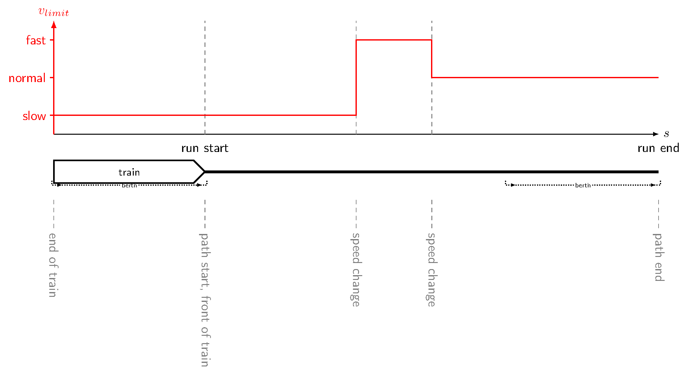
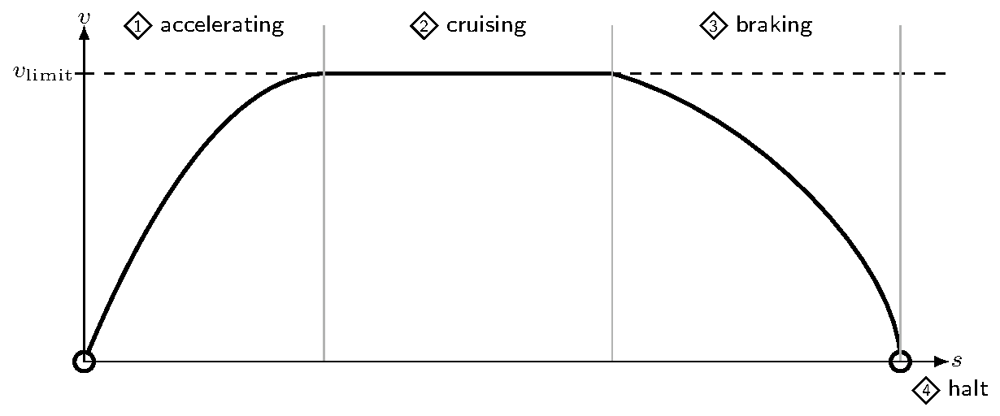

Status: draft · Version: UC-001@1 · Template: v1
Total running time for one train on one path with speed limits only; simple drive cycle (accelerate, cruise, brake, halt); human-editable inputs.
| Field | Value |
|---|---|
| ID | UC-001 |
| Owner | Martin Scheidt |
| Created | 2026-08-12 |
| Updated | 2026-08-13 |
| Packages | TrainRuns (calculate), schema (data) |
Source: usecase.md in UC-001-simple-running-time.
Simple running-time calculation
Goal
Compute the total running time of a train from path start to path end under a piecewise speed-limit profile (v{\mathrm{limit}}(s)), as in the path situation below. Path start coincides with the front of the train (run start); path end coincides with run end. The train is known only by length, (v{\max}), acceleration, and braking acceleration.

The run follows the four drive modes in the figure below — accelerate, cruise, brake, and halt — with no timetable padding, operational dwells, or line resistance / gradient effects.

Inputs for the train and the path must be human-readable and editable. After this workflow, a reader can trust a finite total runtime (seconds) for the chosen inputs.
Scope
In scope:
One train on one path as in A-4: speed limits only ((v_{\mathrm{limit}}(s))), path start = front of the train / run start, path end = run end; drive cycle limited to modes 1–4 in A-5 (accelerate → cruise → brake → halt); human-editable train and path inputs; a total time that can later be regression-checked when the case is activated.
Out of scope:
Line resistance / gradients, coasting and other advanced drive modes beyond A-5, custom solver tuning, timetabling, capacity, energy optimization, RailML import/export, interlocking, multi-train interaction, and certified ATP / safety models.
Actors & systems
| ID | Actor | Type | Role | What they need |
|---|---|---|---|---|
| ACT-1 | Contributor / CI | person / system | Runs and verifies the workflow | Clone + project instantiate |
| ACT-2 | Running-time calculator | package | Loads train + path, computes run | Valid train and path inputs |
| ACT-3 | Train / path data contract | data contract | Defines editable input shapes | Used on load |
| ACT-4 | Integration harness | package | Discovers the case; runs test.jl when active | Case assets when bound |
Preconditions
| ID | Precondition |
|---|---|
| PRE-1 | A calculation approach that accepts train and path inputs is available |
| PRE-2 | Train and path inputs exist and match their data contract (when assets are added) |
| PRE-3 | When activating: expected total time (and tolerance) recorded for regression |
| PRE-4 | Trigger: contributor or CI runs the case test / package tests |
Main scenario
| ID | Actor | Action | Data |
|---|---|---|---|
| STEP-1 | ACT-1 | Load train input | length, (v_{\max}), accel. / braking accel. |
| STEP-2 | ACT-1 | Load running-path input | path with speed limits (no resistance profile) |
| STEP-3 | ACT-2 | Compute simple running-time run | run result including total time |
| STEP-4 | ACT-1 | Read total time (and compare to reference when active) | total time |
Artifacts
| ID | Direction | Artifact | Format / schema | Location | Notes |
|---|---|---|---|---|---|
| A-1 | input | Train | editable kinematic parameters | assets/ (TBD) | only length, (v_{\max}), acceleration, braking acceleration — no mass, forces, or resistance |
| A-2 | input | Running path | editable path with speed limits only | assets/ (TBD) | no resistance / gradient column for this case |
| A-3 | output | Total running time | seconds | calculator result | decidable value when activated |
| A-4 | illustration | Path situation | PNG (+ TeX source) | assets/path_situation.png | shown under Goal; path start = front of train; path end = run end; (v_\mathrm{limit}(s)) only |
| A-5 | illustration | Driving modes | PNG (+ TeX source) | assets/driving_modes.png | shown under Goal; modes 1 accelerate, 2 cruise, 3 brake, 4 halt |
Expected outcomes
| ID | Result | Where you observe it | Pass criterion (decidable) |
|---|---|---|---|
| OUT-1 | Finite positive total running time | calculator result / future test.jl | isfinite(runtime) && runtime > 0 |
| OUT-2 | Runtime matches a recorded reference | future test.jl | abs error ≤ agreed tolerance (set at activation) |
Exceptions
| ID | Trigger condition | Expected behaviour | Severity |
|---|---|---|---|
| EXC-1 | Missing or invalid train/path input | Fail before solve with a clear validation error | error |
| EXC-2 | Bound calculator or schema changes without updating the reference | Regression OUT-2 fails once active | error |
Worked example
EX-1: Given a train specified only by length, (v_{\max}), acceleration and braking acceleration, and a path with speed-limit changes only (path start = front of the train; path end = run end) → When the simple running-time calculation runs (modes 1 → 2 → 3 → 4) → Then a finite positive total time in seconds is obtained. Concrete asset files and a regression constant are added when this case is activated.
Verification
| ID | Given (input with values) | When | Then (expected result with values) | Verifies |
|---|---|---|---|---|
| TEST-1 | A-1, A-2 available | compute run | runtime finite and > 0 | OUT-1 |
| TEST-2 | Same inputs; reference constant in test.jl (at activation) | compare runtime to reference | within tolerance | OUT-2 |
Implementation binding (deferred until status: active):
- Bind
packages:and pin Julia deps in the harnessProject.toml - Add versioned YAML (or other) assets under
assets/for A-1 / A-2 - Fill
test.jlwith regression constants matching OUT-n / TEST-n
Assumptions & limits
- Qualitative / comparative running-time use; not a certified ATP model.
- The train is kinematic only: length, (v_{\max}), acceleration, braking acceleration — no mass, tractive/braking force curves, or train resistance.
- No line resistance or gradient in the path model for this case.
- Drive cycle limited to accelerate, cruise, brake, halt (see A-5).
- Candidate calculator / schema may change before activation; keep Goal and Artifacts stable and record binding choices here when activating.
Reproducibility
- When active: pin Julia and calculator compat in the harness
Project.toml - Version assets in this directory; no RNG expected for this workflow
- Document OS / CI notes only if they affect results
Open questions
| ID | Question | Status | Owner | Blocking |
|---|---|---|---|---|
| Q-1 | Which concrete train and path assets should back EX-1 / TEST-n? | open | Martin Scheidt | true |
| Q-2 | Keep TrainRuns + schema as the binding, or evaluate alternatives before activation? | open | railtoolkit | true |
| Q-3 | Should schema validation also run as a separate CI step, or is load-time validation enough? | open | railtoolkit | false |
References
- TrainRuns.jl (candidate calculator)
- railtoolkit/schema (candidate data contract)